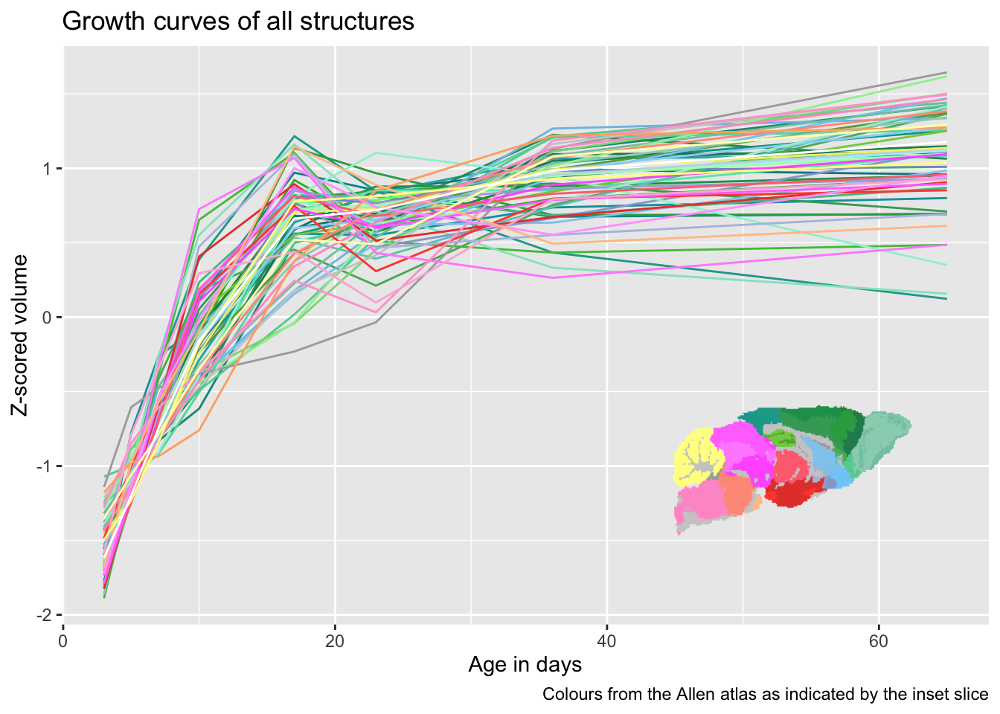

# load all the libs we will need
library(data.tree)
library(tidyverse)
library(RMINC)
library(MRIcrotome)
library(grid)
load("brain_analysis_data_2023nov2.RData")
# the suppress warnings bit deals with a comparison in the data.tree
# library that throws far too many warnings.
hvols <- suppressWarnings(addVolumesToHierarchy(hdefs, structvols))Sometimes we want to draw data from lots of brain structures on a graph. Once you have more than ten or so drawing a legend in the usual style becomes too unwieldy as the legend becomes too big. A good shortcut is to draw each brain structure using the colours from the atlas, which in the mouse case come from the Allen institute (even though our atlas is not the Allen atlas itself).
The motivation for the plot I will use to illustrate how to match atlas colours comes from the series on modelling longitudinal data (see part 1 and part 2 here). I am going to show the different types of developmental trajectories we see. First, we load the data, using the same data as in those two posts.
To draw the trajectories of every structure we first need to put them on the same scale (otherwise the small brain structures would be invisible on a y axis designed to also accommodate brain volume). We also need to get the atlas colours into the same data frame. The basic process is as follows
- Get the volumes from the anatomical tree using the
Getmethod. This will produce a matrix of n scans (224 in this case) by n brain areas in the tree (590 here). - We then have to z-score it using the
scalefunction from base R. - Next we add bits from the data that we care about back in, in particular age in this case.
- We then turn the data into a long data frame, where rather than having one column per brain structure we have one column giving the names of the brain structure, and one column with the corresponding volumes.
- We then have to add the colours:
- First, we get the colours using the
Getmethod and thecolor_hex_tripletvariable that is part of the tree, which has the Allen atlas colours corresponding to that area. - We then
left_joinit to the volumes, matching on structure name, so that every time a row with a particular structure name is found its corresponding colour is added to the data frame.
- First, we get the colours using the
# get all volumes from the tree
scaledallvols <- hvols$Get("volumes") %>%
# scale them (i.e. z-score all volumes within each struct)
scale() %>%
# convert to a tibble
as_tibble() %>%
# add age and subject_id back
mutate(age = gf$age, subject_id = gf$subject_id) %>%
# turn it into a long data frame
pivot_longer(
c(-age, -subject_id),
values_to = "volume",
names_to = "structure"
) %>%
# add the colour variable from the tree
left_join(hvols$Get("color_hex_triplet") %>%
data.frame(allencolour=.) %>%
rownames_to_column(var="structure"))Joining with `by = join_by(structure)`Before plotting, we want to create a legend so that there is some hope of having an idea which line from the trajectories belongs to which structure. The Allen colours will not be discernible enough to tell apart every individual structure, but one can quickly tell that greens are from the cortex, yellows from the cerebellum, etc. To do this we will create a single slice from the atlas labels, which can then be inserted into the plot later. One small bit to note - MRIcrotome draws all slices on a black background, which makes sense 99% of the time, but doesn’t here. Being able to specifty the background in MRIcrotome is a missing feature I should add, but in the meantime we use some grid graphics tricks to simply remove all rectangles from the plot, which also removes the background.
# now we need to make the slice to show the Allen colours
abiColourSlice <- sliceSeries(nrow=1, ncol=1, dimension=1, begin=90, end=91) %>%
overlay(hanatToVolume(hvols, mrilabels, "color_hex_triplet"), low=1, high=2, ) %>%
grobify() %>%
# get rid of the black background
removeGrob("rect", grep=T, global=T)Finally we create the plot. For the plot itself we will simply connect lines between the mean values for every brain structure at every age. We then assign it the colours we created earlier - note the use of I() here, which tells ggplot to take the colours as colour strings rather than as a factor. Then we use the annotation_custom function from ggplot to add the slice in which gives a guide to the colours.
ggplot(scaledallvols) +
aes(x=age, y=volume, colour=structure) +
stat_summary(fun = mean, geom="line", aes(colour=I(allencolour))) +
ylab("Z-scored volume") +
xlab("Age in days") +
labs(title="Growth curves of all structures",
caption="Colours from the Allen atlas as indicated by the inset slice") +
annotation_custom(abiColourSlice, xmin=40, xmax=65, ymin=-2, ymax=0) +
theme(legend.position = "none")